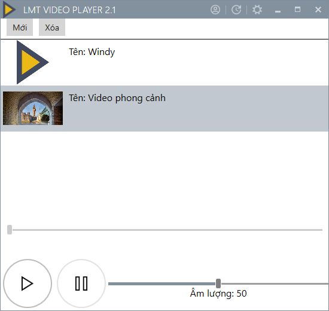

LMT Video Player
Xem video trên máy tính sẽ trở nên cực kì
thú vị với LMT Video Player!
Xem các video MP4, AVI, MPG, Youtube, Facebook thật trất's
- Bài hát
- Video
- Playlist
- Phim
- Radio
LMT Video Player là phần mềm hoàn toàn miễn phí!
Phần mềm có những điểm nổi bật sau:
-
Hỗ trợ xem video offline
Bạn có thể dùng LMT Video Player để xem các video offline trên máy tính một cách dễ dàng. Bạn có thể chọn nhiều file để tạo thành 1 playlist!
-
Giao diện trực quan
Giao diện của phần mềm được thiết kế một cách trực quan, dễ hiểu giúp bất cứ ai cũng có thể sử dụng công cụ này một cách dễ dàng.
-
Hỗ trợ xem video online
LMT Video Player hỗ trợ bạn dễ dàng xem các video online trên Facebook và Youtube. Bạn cũng có thể phát cả playlist video từ Youtube!
-
Hoàn toàn miễn phí
Phần mềm LMT Video Player được cung cấp miễn phí, đồng thời công cụ sẽ tự động kiểm tra các bản cập nhật mới nhất cho các bạn.

Chọn file video hoặc dán link video mà bạn muốn xem!

Giờ thì click Phát và xem thôi :D
<==Video hướng dẫn nè!!!
Liên hệ
Tác giả rất mong nhận được các ý kiến đóng góp của các bạn cho LMT Video Player.